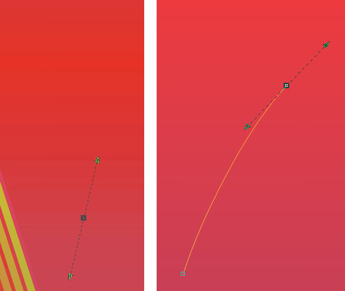
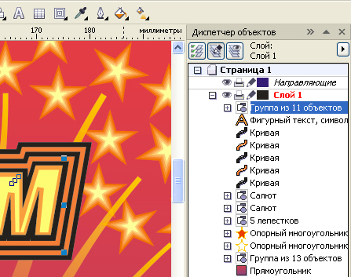

Рисуем плакат С ПРАЗДНИКОМ ПОБЕДЫ!
Этот урок не преследует цель создания высокохудожественного шедевра, а нацелен дать возможность начинающим и сомневающимся самим попробовать некоторые возможности программы на примере рисования открытки или плаката и почувствовать, насколько легко и удобно работать в программе CorelDraw.
1. Итак, откроем чистый лист, например, формата А4 и начнём с создания самого крохотного элемента нашей композиции - лепестка цветка. Воспользуемся заготовкой каплевидной формы из набора основных фигур и “вытянем” Каплю высотой около 4,5 мм.
2. Затем, чтобы каплю можно было редактировать, преобразуем её в кривые (Ctrl+ Q).
Сильно увеличьте изображение в области вершины капли и добавьте вблизи вершины еще одну точку (выбирете инструмент Форма, щёлкните на линии правой кнопкой мышии в открывшемся меню выбирете “Добавить”).
3. Щёлкните по вновь созданной точке и оттащите её немного в сторону.
4. Затем оттащите примерно на такое же расстояние точку вершины.
5. Преобразуйте нижнюю точку в угловую. Щёлкните по ней инструментом Форма и в открывшемся меню выбирете Перегиб.
6. Перемещая концы стрелок выделенной точки, придайте фигуре внизу остроконечную форму.
7. Поочерёдно выделяя боковые точки и вытягивая векторы вниз, редактируйте форму лепестка.
8. Инструментом Выделение щёлкните по фигуре два раза и, получив маркеры вращения, стащите маркер центра вращения вверх, как показано на рисунке.
9. Настройте смещение копии по Х и по У равным нулю (Инструменты - Параметры - Документ - Общие) и сохраните как настройки по умолчанию (Инструменты - Сохранить как настройки по умолчанию), ибо это всегда удобно при создании концентричных рамок, полей, окружностей и для обеспечения точного положения копии при дальнешем её перемещении.
Теперь выделите лепесток и создайте его дубль (Ctrl+D). Добавление нового объекта видно в диспетчере объектов (Инструменты - Диспетчер объектов). Выделение не снимать. Это важно.
10. На панели свойств, в окошке угла поворота введите значение 72 и нажмите клавишу Enter. Копия будет повёрнута на 72 градуса. Выделение не снимайте. Это важно!

11. Последующие дубли с повтором трансформации (или ряда трансформаций) выполняются простым нажатием клавиш Ctrl+D. В данном случае их надо нажать подряд три раза. Затем Выделите все пять лепестков и объедините их в один объект (Упорядочить - Объединить) или нажать соответствующую кнопку на панели свойств.
12. Затем с помощью инструмента Перетекание расставим наш цветочек по эллиптической линии.
Инструментом Эллипс создайте небольшой эллипс. Размер его должен примерно в 12-15 раз превосходить размер цветка.
Создайте дубль цветка (Ctrl+D) и расположите оба цветка на линии эллипса, как показано на рисунке.
13. Выберете инструмент Перетекание.
Установите на панели свойств в окошке “Число шагов” значение 20. Затем “кликните” по одному цветку, и не отпуская левую кнопку мыши, вытягивайте второй маркер ко второму цветку и “кликните” его.
В результате между двумя цветками выстроится целый ряд из указанного количества копий.
14. Затем на панели свойств нажмите кнопку “Свойства пути” и выбирете : Новый путь.
Курсор изменит вид на зигзагообразную кривую. Кликните им по линии эллипса. Цветки должны выстроиться вдоль линии эллипса.
15. Затем разъедините группу перетекания и путь (Упорядочить - Разъединить...). Удалите эллипс.
16 Выделите группу перетекания ( кстати, очень удобно пользоваться при этом диспетчером объектов, в нём не просто видна послойная структура из всех объектов, но и видны группы объектов и более сложные структуры из вложенных групп). В данном случае в диспетчере объектов видно,что после разъединения группы перетекания получилась собственно группа перетекания (объекты остаются сгруппированы) и два объекта - исходный и конечный. Мы собственно всё это проделываем для того, чтобы все цветки объединить в группу, которую можно подвергнуть дальнейшей групповой обработке и работать с этой группой, как с объектом для создания более сложной структуры.
Разгруппируйте группу перетекания (Ctrl+U). С нажатой клавишей Ctrl добавьте к выделению исходный и конечный объекты, кликнув их непосредственно в диспетчере объектов и сгруппируйте(Ctrl +G).
17. Добавим цветкам градиентную заливку. В окне “Фонтанная заливка” выбираем тип: радиальная;
выбираем цвета: конечный и исходный (если в раскрывающейся палитре нет подходящего тона, то можно нажать “Другой” и в открывшемся окне “Выбор цвета” указать точные параметры).
Вернёмся к окну “Фонтанная заливка”, в окошке “Сдвиг края” установим значение 20 (чем больше это значение, тем более резкая граница перехода от одного цветового тона к другому, при значении 0 переход наиболее плавный.
18. Теперь выделите группу, сместите маркер центра вращения в место, где была верхняя точка эллипса, дублируйте группу с поворотом на 72 градуса, подобно тому, как мы это делали с лепестком.
19. Ещё три дубля замкнут пять групп цветков в ажурную розетку.
Выделите все пять групп и сгруппируйте (Упоядочить - Сгруппировать).
20. Добавим звезду в центр розетки.
Придадим ей красную заливку и жёлтый абрис толщиной 1 мм.
Для тех, кто только ещё знакомится с программой CorelDraw, скажем, что назначить объектам заливку и абрис очень легко и просто: щелчком левой кнопки мыши по ячейке палитры назначают заливку, а правой кнопкой - абрис или обводку. Для заливок палитру легко раширить в 49 раз: если задержать на пару секунд нажатой кнопку на ячейке палитры, то ячейка превращается в минипалитру из 49 оттенков, близких к выбранному.
21. Создайте дубль звезды.
Выбирете: Эффекты - Скос.
Поэкспериментируйте с параметрами или установите такие, как на этом рисунке.
22. Выделите в диспетчере объектов звезду без эффекта и выбирете инструмент Интерактивный контур.
23. На панели свойств установите параметры интерактивного контура как на рисунке.
24. Теперь добавим фон.
Двойным щелчком по инструменту Прямоугольник, получим прямоугольник по границам листа.
Обратите внимание на рациональную особенность: новый объект добавился в диспетчере объектов внизу списка (а не вверху как обычно при создании нового объекта), что очень удобно для создания фона.
Выбирете инструмент Фонтанная заливка и установите параметры, как на рисунке или можете попробовать другие.
25. После добавления фона мы видим, что контурная группа от звезды, которая сама по себе выглядела ярко и красиво, теперь в сочетани с фоном слишком контрастна.
26. Попробуем пригасить её с помощью эффекта смешивания слоёв, который задаётся инструментом Прозрачность.
Но сначала разъединим контурную группу и звезду.
Выделите контурную группу и выбирете инструмент Прорачность. установите параметры как на рисунке или попробуйте другие.
27. Здесь обратите внимание на ещё один параметр - Ускорение, который в предыдущей контурной группе мы не применяли. Он задаёт изменение шага между линиями (шаг постоянный при среднем положении ползунка или уменьшается для внешних линий и увеличивается для внутренних при перемещении ползунка вправо, и соответственно наоборот при перемещении ползунка влево.
В нашем примере мы видим, как внутренние линии контурной группы слились в сплошной жёлтый фон вокруг звезды.

28. Дальше приступим к рисованию салюта. На этом этапе урока инструмент Безье могут попробовать даже те, кто сталкиавается с ним впервые. Итак, выбирете инструмент Безье и, щёлкнув левой кнопкой мыши в каком-либо месте, вы обозначаете точку (опорную точку, узел).
Не отпуская кнопку мыши, двигая мышь, вытяните из точки вектор в нужную сторону и отпустите кнопку.
Затем, переместив курсор в место следующей точки, так же нажмите кнопку и, не отпуская её, вытяните вектор и, двигая и поворачивая его, придайте линии между двумя точками необходимую кривизну.
Если не удалось добиться нгужной кривизны линии, то её можно отредактировать с помощью инструмента Форма, как мы уже делали это при создании лепестка.
29. Смените инсрумент Безье на Указатель и установите толщину линии 2 мм.
30. Затем преобразуйте линию в объект (Упорядочить - Преобразовать абрис в объект, или Ctrl+Shift+Q).
Не снимая выделение выбирете инструмент Форма, на границе объекта обозначатся опорные точки, выделите поочерёдно или обе ( с клавишей Shift) точки в серединной части и удалите их, так легче будет править форму (рис. слева).
Затем перетащите одну из нижних угловых точек, придавая полоске расширяющуюся к низу форму (рисунок справа).
31. Теперь полоске, изображающей дымный шлейф придадим линейную прозрачность.
Выбирете инструмент Прозрачность и установите тип: Линейные.
Перетащите появившиеся маркеры: белый к верххнему концу полоски, чёрный к нижнему. На рисунке слева видно,как нарастает прозрачность к нижнему концу полоски, но края её всё ещё видны. Если расположить чёрный маркер чуть выше, в пределах полосы, то её нижний край становится более размытым и, смещая средний маркер вверх, можно усилить степень нарастания прозрачности (рисунок справа).
32. Над верхним концом полоски добавим небольшую звёздочку и создадим у звёздочки небольшую контурную группу так же, как мы это делали с большой звездой.
Далее создайте группу салюта на основе созданного элемента изображения, используя небольшие простейшие трансформации для полоски дымного шлейфа (сжатие - растяжение по ширине и высоте и вращение, а также отражение). Учтите, что кнопки команд Отразить по горизонтали и Отразить по вертикали появляются на панели свойств рядом с кошком Угол поворота только при инструменте Указатель и при выделенном объекте.
33. Теперь перейдём к добавлению надписей.
Выбирете инструмент Текст и наберите: С ПРАЗДНИКОМ.
Смените инструменты Текст на Указатель и в окошке Шрифт выбирете какой либо подходящий плакатный из имеющихся в системе. Перетащите надпись в нужное место и трансформируйте до нужных размеров. Задайте цвет заливки, абрис не задавайте, так как дальше мы будем создавать вокруг надписи контурную группу только от заливки.
Выбирете Интерактивный контур и задайте параметры как на рисунке.
34. Теперь выделите контурную группу и текст и разъедините их так же, как мы это делали с контурной группой звезды (Упорядочить - Разъединить...).
Затем выделите только контурную группу и разгруппируйте (Ctrl+U).Теперь из пяти кривых, полученных после разгруппировки контурной группы выделите три (прямо в диспетчере объектов с нажатой клавишей Ctrl) : две крайних и среднюю и назначьте цвет заливки чёрный.
35. Теперь выделите вторую и четвёртую кривые и задайте цвет заливки оранжевый.
36. Теперь создадим внутреннюю контурную группу для этой же надписи.
Выделите текст, выбирете Интерактивный контур и задайте параметры как на рисунке. Обратите внимание, что для контура, создаваемого внутрь объекта, выбираем на панели свойств первую кнопку (см. рисунок).

37. Теперь разъедините текст и контурную группу.
Выделите только контурную группу и задайте цвет заливки светло жёлтый.
38. И последнее действие с этой надписью - сгруппировать текст и все контуры.
Прямо в диспетчере объектов выделите группу внутренних контуров и с клавишей Shift последнюю (самую нижнюю) из пяти внешних контуров и сгруппируйте.
39. Теперь добавим слово ПОБЕДЫ! тоже каким-нибудь плакатным шрифтом (к плакатным я отношу такие, которые имеют в сновном жирное начертание и могут иметь некоторые элементы декоративности).
40. Создайте дубль этого слова. Отмените обводку у слова, которое располагается ниже и теперь добавим этому слову эффект Вытягивание. Надо сказать, что это довольно сложный эффект (по количеству настроек), и подробно на его описании здесь останавливаться не будем, этому можно посвятить отдельный урок. Просто воспользуйтесь настройками, приведёнными на рисунке.
Обратите внимание на диспетчер объектов на рисунке над п.39. Слово с группой вытягивания накрыто его копией, которая для большей декоративности имеет обводку. Если бы мы создавали эффект от него, то на боковых гранях тех объёмных блоков, которые получились в результате вытягивания, вдоль рёбер также шли бы ярко жёлтые линии обводки.

41. По поводу линии обводки следует отметить один нюанс. Контур объекта, для которого применяется обводка, является для неё осевой линией. Поэтому наполовину своей толщины линия заходит внутрь объекта, а наполовину выступает наружу.
В данном случае при комбинировании двух одинаковых объектов, для одного из которых применён эффект вытягивания, а для второго применена обводка, видно, что края линии обводки как козырьком накрывают объёмные блоки вытягивания. Избежать этого можно, если отменить обводку и создать её имитацию путём создания внутренней группы контуров, как мы уже это делали в случае с надписью С ПРАЗДНИКОМ. Только цвет слова теперь измените на жёлтый, контурной группе после разъединения её и объекта назначьте цвет заливки красный.
Шаг, который Вы зададите для контурной группы будет играть роль толщины линии обводки.
42. Дальше следует уделить внимание обрезке выступающих элементов. Всё-таки дизайнер должен приучить себя быть корректным по отношению к печатнику и не подавать ему творения, где что-то выступает дальше, чем вылеты фона за обрез (обычно 3-5 мм).
Выбирете инструмент Указатель и стащите с линейки направляющую. На панели свойств появятся новые кнопки, среди которых выбирете Заготовки направляющих.
43. В открывшемся окне выбирете: Границы страницы - Применить заготовки - ОК.
Теперь установите привязку к направляющим (Вид - Привязывать к направляющим).
44. Выбирете инструмент Обрезка. Подведите курсор к одному из углов листа, когда у курсора появится надпись Пересечение, кликните и, не отпуская кнопку мыши тащите к противоположному углу. При появлении такой же надписи отпустите кнопку мыши.Область обрезки обозначится маркерами. Внутри этой области сделайте двойной щелчок.
Следует заметить, что в случае обрезки очень сложных объектов, насыщенных большим количеством линий, может понадобится некоторое время для обработки процессором этой команды. И не забывайте выделять обрезаемые объекты.
45. Проявив ещё немного фантазии, можно ещё улучшить вид нашего плаката. Вы видите, что он насытился мелкими деталями: прибавились звёздочки, цветочки, ещё одна ажурная группа лепестков с другой окраской, вертикально отразились ажурная группа лепестков и фон, а также режим смешивания слоёв был заменён на “Красный”. Но Вы можете проявить свою фантазию, здесь Вас никто не ограничивает. Главное - творческий подход к работе. Надеюсь, что Вы нашли для себя что-то интересное в этом уроке.
спасибо за урок
А вот вариант открытки, в которой были использованы некоторые элементы изображения из данного урока.